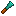

Minecraft decoration, rebuilt
Build with more detail.
Chisel turns familiar materials into a deep palette of architectural blocks. CTM gives those blocks seamless edges, large patterns, and expressive surfaces.

Documentation
Choose your path
Get the answer you need without wading through internals that do not apply to you.
Shape your world
Install Chisel, learn the tools, switch modes, and turn ordinary blocks into something worth building around.
02 / MODPACK AUTHORSMake it fit your pack
Extend variant families with tags, tune durability, understand dependencies, and ship compatible resources.
03 / DEVELOPERSBuild on the system
Use the Chisel addon API or bring CTM's JSON models and datagen helpers into your own NeoForge mod.
Open source
Two projects, one toolkit
Chisel is the player-facing building mod. CTM is the rendering library behind its connected textures.
A from-the-ground-up Chisel rewrite for modern NeoForge. Includes rich block families, chisel modes, automation, measuring and building tools.
A NeoForge-native connected-texture library with standard, directional, multiblock, anti-repeat, edges, layered, and custom-overlay models.
The idea
More choice. Less visual noise.
Chisel expands a builder's palette without changing the material underneath. CTM lets neighboring blocks behave like one deliberate surface instead of a grid of repeated tiles.